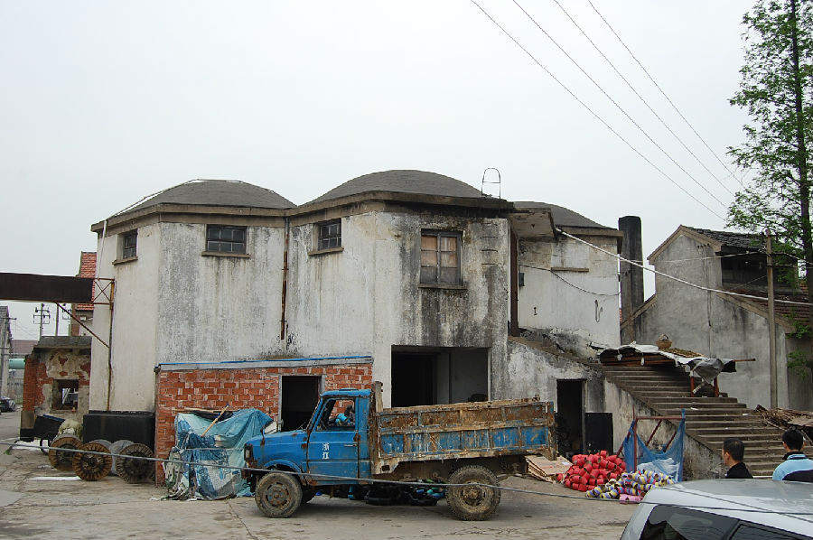
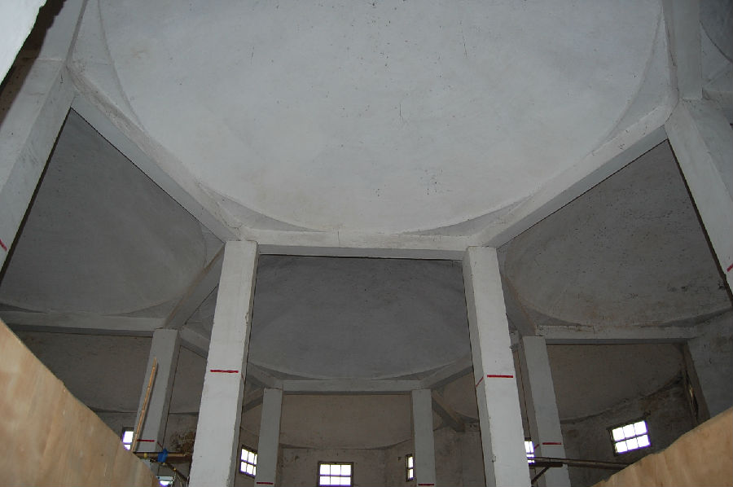

嘉兴市文物保护网 · 市级文物保护点 · 2020-11-06 · 原文


双桥苏式粮仓位于嘉兴市秀洲区王江泾镇双桥村蓝河湾。据原粮站站长介绍，建于1963～1964年，由于当时缺少钢筋，故在建造时，以青砖为基础材料，少量钢筋加固。原有2座同样款式的粮仓，1980年为扩建粮仓被拆除，2003年转卖给私人做仓库，能存放粮食100万吨。粮仓带有典型的苏式建造风格，南北长21米，东西长13.6米，顶高为6.98米。平面布局呈东西对称的多边形，有22条边，边长为3.28米，屋顶由10个六坡拱顶组成，立面分檐部、墙身、勒脚三段式。粮仓墙体和拱顶均用青砖平砌而成，内部无隔断，以10根柱子作支撑，墙体上部共设有22个通风窗。粮仓朝南设有宽大的水泥台阶通往内部以便运输。双桥苏式粮仓形制独特、是建国初期中苏友好的象征，在嘉兴地区较少见，对研究新中国初期的经济和社会具有较高的历史价值。2009年公布为嘉兴市文物保护点。